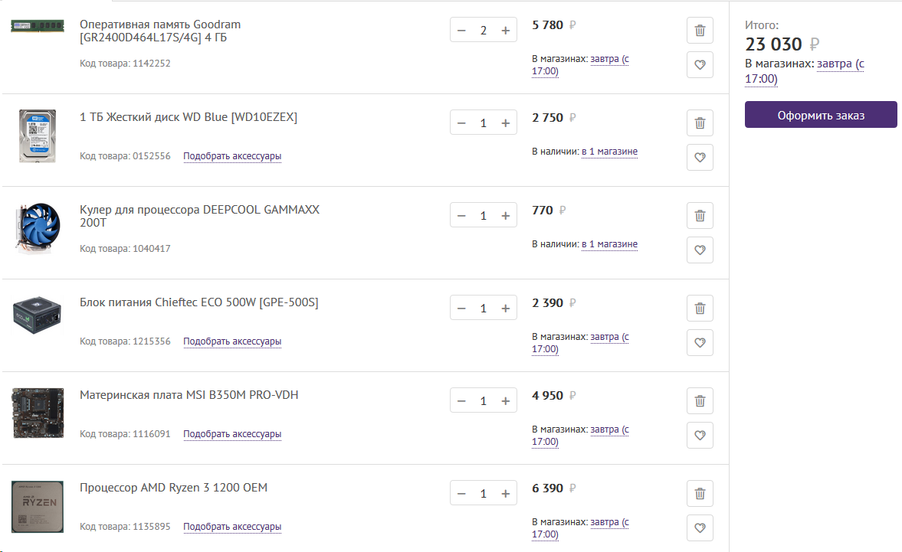

Процессор: AMD Ryzen 3 1200 - 6400
Deepcool GAMMAXX 200T - 770
Мат. плата: ASROCK A320M-DGS (DVI-D) - 3500
Блок питания: Chieftec ECO 500W [GPE-500S] - 2550
Видеокарта (система охлаждения): GTX550 TI - 1250
Жест. диск: Western Digital Blue 1TB (WD10EZEX) - 3150
ОЗУ: Crucial CT8G4DFS824A 8Gb - 5700
Корпус: GameMax H603 - 2500 (nix.ru)
Итого: 25 820
Процессор: AMD Ryzen 3 1200 OEM - 6400
СО процессора: Deepcool GAMMAXX 200T - 770
Мат. плата: ASUS PRIME B350M-K (VGA, DVI-D) - 4600
Блок питания: Chieftec ECO 500W [GPE-500S] - 2550
Видеокарта (система охлаждения): Ice Hammer IH-700B - 1000
FAN для GPU: Xilence XF039 - 170
Жест. диск: Western Digital Blue 1TB (WD10EZEX) - 3150
ОЗУ: Crucial CT8G4DFS824A 8Gb - 5700
Корпус: GameMax H603 - 2500 (nix.ru)
Итого: 26 870
Процессор: AMD Ryzen 3 2200G Box - 7300 / OEM - 6800 + Deepcool GAMMAXX 200T - 770
Мат. плата: ASUS PRIME B350M-K (VGA, DVI-D) - 4600 / MSI B350M PRO-VD PLUS - 4500
Блок питания: Chieftec ECO 500W [GPE-500S] - 2550
Видеокарта (система охлаждения): Ice Hammer IH-700B - 1000
FAN для GPU: Xilence XF039 - 170
Жест. диск: Western Digital Blue 1TB (WD10EZEX) - 3150
ОЗУ: Crucial CT8G4DFS824A 8Gb - 5700
Корпус: GameMax H603 - 2500 (nix.ru)
Итого: 26 900
Процессор: Core i3-8100 Coffee Lake - 8400 + Cooller 800
Мат. плата: MSI H110M PRO-D (DVI-D) - 3000
Блок питания: Chieftec ECO 500W [GPE-500S] - 2550
Видеокарта (система охлаждения): Ice Hammer IH-700B - 1000
FAN для GPU: Xilence XF039 - 170
Жест. диск: Western Digital Blue 1TB (WD10EZEX) - 3150
ОЗУ: Crucial CT8G4DFS824A 8Gb - 5700
Корпус: GameMax H603 - 2500 (nix.ru)
Итого: 27 300
ВАРИАНТ 1
//*********************************************************************
Мат. плата: ASUS PRIME B350M-K (VGA, DVI-D) - 4600
Блок питания: Chieftec ECO 500W [GPE-500S] - 2550
СО видеокарты: Ice Hammer IH-700B - 1000
FAN для GPU: Xilence XF039 - 170
Термопаста Arctic Cooling MX-2 (2g) - 330
Жест. диск: Western Digital Blue 1TB (WD10EZEX) - 3150
ОЗУ: Crucial CT8G4DFS824A 8Gb - 5700
Корпус: GameMax H603 - 2500 (nix.ru)
Итого: 20 000
//*********************************************************************
Процессор: AMD Ryzen 3 1200 OEM - 6400
СО процессора: Deepcool GAMMAXX 200T - 770
+7 170
Итого: 27 170
ВАРИАНТ 2
//*********************************************************************
Мат. плата: MSI B350M PRO-VDH (HDMI, VGA, DVI-D) - 4950
Блок питания: Chieftec ECO 500W [GPE-500S] - 2550
СО видеокарты: Ice Hammer IH-700B - 1000
FAN для GPU: Xilence XF039 - 170
Термопаста Arctic Cooling MX-2 (2g) - 330
Жест. диск: Western Digital Blue 1TB (WD10EZEX) - 3150
ОЗУ: Goodram [GR2400D464L17S/4G] 4 ГБ - 2900 x 2 = 5800
Корпус: GameMax H603 - 2500 (nix.ru)
Итого: 20 450
//*********************************************************************
Процессор: AMD Ryzen 3 1200 OEM - 6400
СО процессора: Deepcool GAMMAXX 200T - 770
+7 170
Итого: 27 620
Можно сэкономить, взяв MB под 2 слота оперативной памяти:
MSI B350M PRO-VD PLUS - 4400 (-550 р) и BOX версию CPU (-200 р).
Аналоги по CPU
Процессор: AMD Ryzen 3 2200G Box - 7300
Итого: 27 300
Процессор: AMD Ryzen 3 2200G OEM - 6800
СО процессора: Deepcool GAMMAXX 200T - 770
+7 570
Итого: 27 570
24" Монитор Samsung S24D300H (HDMI, VGA) - 7700
24" Монитор Samsung S24D330H (HDMI, VGA) - 8500
23" Монитор LG 23MP48D-P (VGA, DVI-D) - 7900
24'' Монитор Philips 240V5QDSB (HDMI, VGA, DVI-D) - 8200 --- V
24'' Монитор Philips 243V7QDSB (HDMI, VGA, DVI-D) - 8600
24'' Монитор Philips 243V5QHSBA (HDMI, VGA, DVI-D) - 7300
//*********************************************************************
//*********************************************************************
//*********************************************************************
//*********************************************************************
//*********************************************************************
//*********************************************************************
Технопоинт:
AMD Ryzen 3 1200 OEM - 6390
MSI B350M PRO-VDH - 4950
Chieftec ECO 500W [GPE-500S] - 2390
Deepcool GAMMAXX 200T - 770
Western Digital Blue 1TB (WD10EZEX) - 2750
Goodram [GR2400D464L17S/4G] 4 ГБ - 2890 x 2 = 5780

Nix (28.05)
PHILIPS 243V7QDSB/01 - 8359
GameMax H603 - 2450
//*********************************************************************
Ryzen 1200
В моем случае не хочет брать больше 3.8 ггц, хотя кто-то там 4.1 берёт.
Две абсолютно одинаковые системы собрал, одна стабильно заводится и работает на 4,0 вторая на 3,8.
Свободный разгон, в моём случае 4 Ггц при 1,38 вольта. Температуры в разгоне под недорогой башней - не выше 64 градусов в стресс-тестах.
Стабильные 3.9 Ггц на asrock ab350m hdv, под нагрузкой 52-55 градусов в стресс тесте на deepcol iceblade 100.
Cтабильно работает в разгоне без поднятия вольтаж до 3.7. Ну а далее черные экраны в стресс тестах. приходится поднимать напряжение до 1,3875 после чего ведет себя стабильно, но требует охлаждения.
Разогнал до 3.9GHz, 1.35v, неплохой компромис, но можно лучше. Температура в играх с кулером IceBlade 100 примерно 60-62°.
Базовая частота 3.1 двумя кликами в биосе поднимается до 3.5 на штатном кулере из коробки.
3800 мгц / 1.3в. 70 г в стресс тесте prime95 на боксе. В играх максимум 60 градусов.
Для интереса пробовал разгон, берет стабильные 3.85
Возможность разогнать до 3800 без танцев с бубном.
Процессор без пробелов гонится до 3.8 ГГц, запускается на 3.9 , но тест на стабильность linx не проходит.
Разогнал проц до 3.7 на боксовом кулере (гонится и выше,но меня не устраивают температуры).
Брал с AMD оперативкой 2 х 4г на 2400, разогнал сразу с первого раза до 3200, а проц поставил пока на 3.7. Потом попробую больше. Система прошла тест.
Взял память крушел 16 гигов, разогнал на 3200 и полет норм. Проц тоже разогнал до 3,8 ГГц.
Свободный разгон, в моём случае 4 Ггц при 1,38 вольта. Температуры в разгоне под недорогой башней - не выше 64 градусов в стресс-тестах.